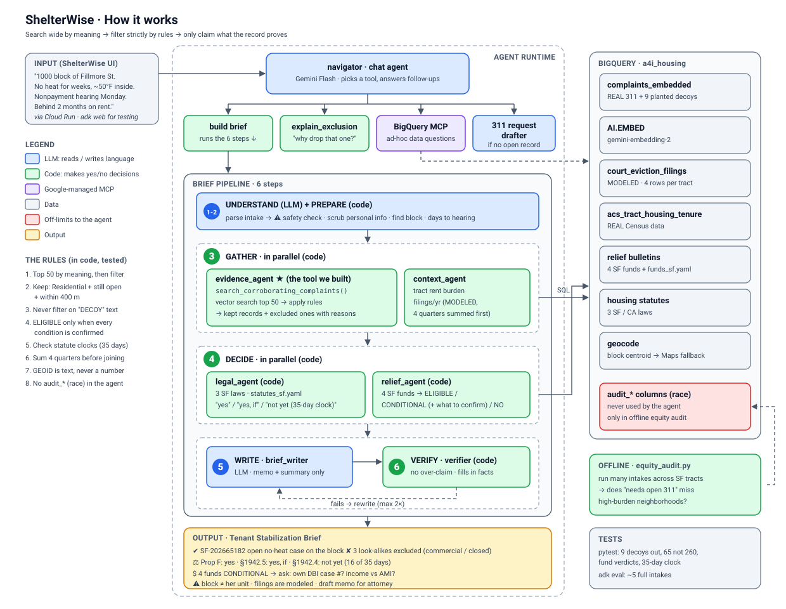

Multi-agent architecture
A chat agent (navigator) calls a fixed 5-step brief pipeline. LLMs read and write language; code makes every yes/no decision. Click any agent to see what it reads, writes and which tables it touches.
blue = LLMgreen = codepurple = Google-managed MCP
Retrieval pattern: search wide by meaning → filter strictly by rules → only claim what the record proves
-- evidence_agent · search_corroborating_complaints() (filters run in Python, NOT in SQL WHERE)
SELECT base.request_id, distance
FROM VECTOR_SEARCH(TABLE a4i_housing.complaints_embedded, 'embedding',
(SELECT AI.EMBED(@search_query) AS embedding), top_k => 50);
-- then join back for the columns complaints_embedded does NOT have (lat/lng, created_date, agency, provenance)
JOIN a4i_housing.municipal_311_housing_complaints m USING (request_id)
-- Python rules: property_type='Residential' AND closed_date IS NULL AND distance_m <= 400
Schema note for the team:
complaints_embedded has no latitude, longitude or created_date. The 400 m radius and the 35-day statute clock need them, so join back on request_id (or add the columns when building the embeddings).Original diagram (Hualin)

Open from the repo (mockup/ next to docs/) to see docs/hualin/architecture.svg here.'">Dataset a4i_housing · 6 tables · 84 columns
Click a table to see every column, type, nullability, provenance, and which agent uses it. Starter data covers 6 metros; this mockup uses San Francisco.
How tables relate
census_tract_geoid (STRING, keep leading zeros) ├─ acs_tract_housing_tenure 1 row / tract → context_agent (+ offline equity audit) ├─ court_eviction_filings 4 rows / tract → context_agent (SUM 4 quarters FIRST) ├─ municipal_311_housing_complaints N rows / tract → evidence_agent (request_id = PK) └─ complaints_embedded same rows + embedding → evidence_agent VECTOR_SEARCH (join via request_id) metro_area / state_code ├─ municipal_housing_ordinance_statutes 3 rows / metro → legal_agent └─ rental_relief_program_bulletins 4 rows / metro → relief_agent (+ funds_sf.yaml conditions)
The 8 rules (all in code, all tested)
- Search wide, then filter. Top 50 by meaning, then rules in Python. No SQL
WHEREbefore ranking. - Keep a record only if Residential and
closed_date IS NULLand within 400 m. - Never filter on the words
DECOY/[Planted Case]. The real rules must catch all 9. - Funds: ELIGIBLE only when every condition is confirmed; otherwise CONDITIONAL + what is missing; INELIGIBLE when a known fact rules it out.
- Statutes with clocks: compare complaint open date with the deadline (35 days for §1942.4).
- Filings: sum the 4 quarters per tract before joining; always label “modeled”.
- GEOIDs are text (
06075…keeps its 0). audit_*columns never enter the agent; offline equity audit only.
Product guardrails
- Evidence before answer: every claim cites a source or is labeled tenant-reported.
- Absence ≠ proof: no 311 record never means no problem.
- Block ≠ unit: a complaint on the same block is not proof about her apartment.
- Retrieval ≠ legal determination: statutes are “applies / applies if / not yet”.
- Verifier blocks over-claims; brief is rewritten up to 2×.
- Human review by advocate/attorney before any action.
- Non-goals: no auto-filing, no eviction prediction, no contacting landlords or courts.
- One intake per session; raw narratives are not logged.